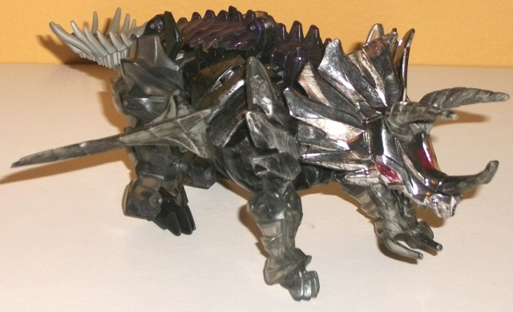 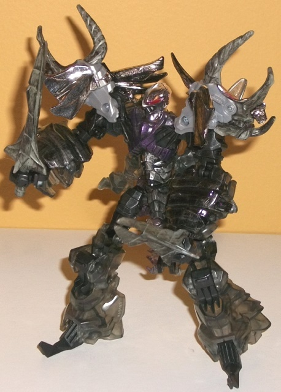
Size : Deluxe
Difficulty of Transformation : Easy
Color Scheme : Clear tinted plastic, charcoal black, silver, light flat gray, and some chrome silver, dull dark metallic purple, black, and dark red
Individual Rating : 8.2
Allegiances
: Autobot
Set Price
: $100 (U.S.)
(NOTE: Because this set is composed of repaints,
this is not a full-blown review. This mainly covers any changes made to
the set and the color scheme, and merely compares it to the original versions
of these molds. For a review on the mass-release AoE deluxe Dinobot Slug,
go
here
. For a review on the mass-release AoE
voyager Grimlock, go
here
. For a review
on the mass-release AoE deluxe Scorn, go
here
.
For a review on the mass-release AoE voyager Slog, go
here
.
For a review on the mass-release AoE deluxe Strafe, go
here
.)
 Dinobot
Slug
Dinobot
Slug
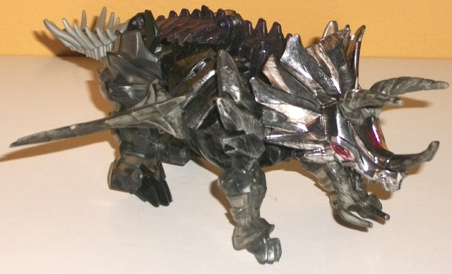
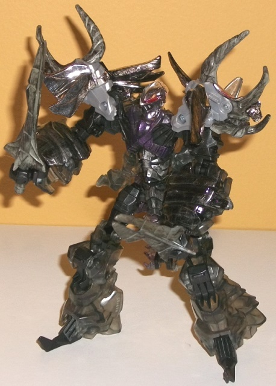
Size
: Deluxe
Difficulty of Transformation
: Easy
Color Scheme
: Clear tinted plastic,
charcoal black, silver, light flat gray, and some chrome silver, dull dark
metallic purple, black, and dark red
Individual Rating
: 8.2
Whereas the other
expensively-priced
boxset
that an AoE Slug redeco was packed in was a G1 nod, this 5-pack
is more of an "ultimate screen accuracy" version, foregoing the more individual
color schemes the mass-release toys of these characters had in favor of
the more subdued, marked-up dirty gray decoes that the characters sported
in the actual movie. For Slug, much of his plastic-- in fact, probably
most-- is actually transparent (but tinted) plastic. By itself, this doesn't
look that impressive-- however, Slug (and the other figures in this "Platinum
Edition" boxset) are almost entirely COVERED in paint apps. The rear dino
legs/robot legs, lower front dino legs, and lower midsection pieces are
unfortunately unpainted, although particularly in dino mode these are "in
shadow" by the pieces above them, so this isn't as much of an issue as
you'd think. The upper dino arms are covered with some EXTREMELY nice silver
paint weathering to make Slug look nice and battleworn. The back likewise
has a dull, dark purple paint brushed across it in a weathered pattern,
keeping Slug relatively screen-accurate while also giving a bit of individualistic
color and pointing a tiny bit back to his mass-release toy. He also has
black and silver weathering paint apps applied all over his chromed dino
head and upper midsection pieces-- again, this all looks completely amazing
and really makes Slug look about as realistically "worn" as you could make
a brand-new toy. There's also some black weathering even on the "bendy
plastic" lance weapons and dino horns, though for some weird reason the
light gray plastic used for his tail has no paint apps at all on it. This
is really weird, considering how much it sticks out compared to Slug's
otherwise very dark, dull-and-weathered color scheme. Going into robot
mode, there's some unpainted black plastic more apparent here, though only
on relatively small pieces and given the dark color scheme, it doesn't
stick out like the light gray tailpiece. There's also a significant amount
of weathering on Slug's waist and abs, and some more dull purple along
his chest. His chromed robot head is squeaky-clean, though, with a nice
dark-but-still-vibrant red for his optic, which is also used on his dino
eyes. Unfortunately, the lack of paint on his legs in robot mode is much
more apparent, and looks odd compared to all the paint on his upper body
and arms.
No mold changes have
been made to this version of Slug.
 Grimlock
Grimlock
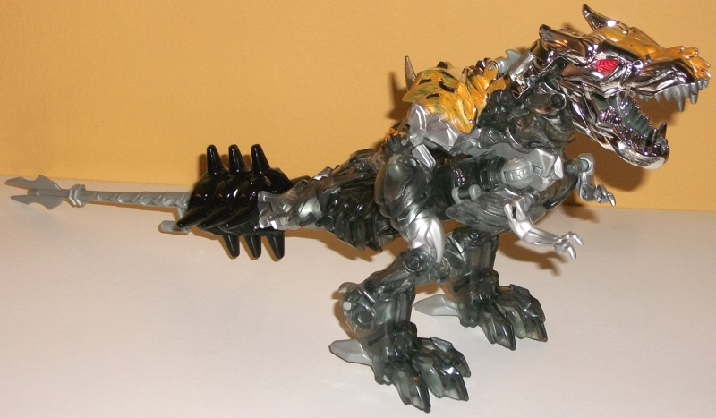
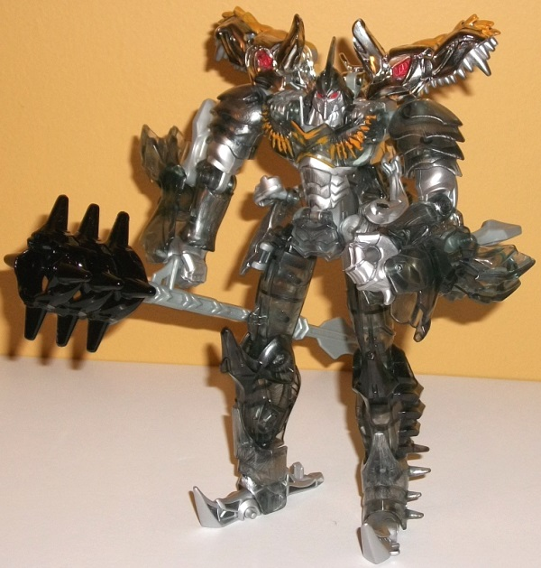
Allegiance
: Autobot
Size
: Voyager
Difficulty of Transformation
: Medium
Color Scheme
: Clear tinted plastic,
chrome silver, silver, and some black, light milky gray, red, and orangish
yellow
Individual Rating
: 8.5
Almost all of Grimlock's
entire body is made of the clear tinted plastic that is used on the other
toys in this set a bit more conservatively, with chrome silver along his
upper back and head. There's also a good amount of silver paint on him--
in addition to the solidly-painted silver pieces on the robot waist, robot
abs, robot toes, dino legs just above the knees, and the dino arms, there's
also a lot of really nice silver "weathering" brushing along the lower
robot legs, the dino legs above the feet, the dino chest pieces, and along
the side neck pieces. (There are a few pieces of that blah light milky
gray plastic-- such as the dino heels, the body of the weapon, and the
hip joints-- but these are mostly small pieces and easily overlooked.)
Compared to the other Dinobots in this set, Grimlock has little black,
with his weapon head being the only piece solidly black, with a little
bit of black weathering on his abs. As a whole package, Grimlock still
looks GOOD, just not AS good as the other Dinobots in this set, at least
when it comes to the color scheme. He's got just a bit too MUCH transparent
plastic-- including on bits like his robot head and his entire robot legs
that really should've been solid or perhaps chromed-- which also aren't
brushed with silver paint to make them look worn and more "solid". It looks
a bit odd, like Grimlock's part ghost. (At least the red eyes and silver
face on the robot head look pretty awesome against the transparent plastic,
though.) I'm also not sure WHAT is up with the ugly Bumblebee-like yellow-orange
paint brushed lightly on the top of his dino head, upper back, and along
a bit of his robot chest. It's certainly not accurate to the movie, where
he has more of a "rusted deep sea" feel, and it's not a throwback to his
mass-release toy, as the color is too yellow and not enough brown. It just
looks wildly out of place.
No mold changes have
been made to this version of Grimlock.
 Scorn
Scorn
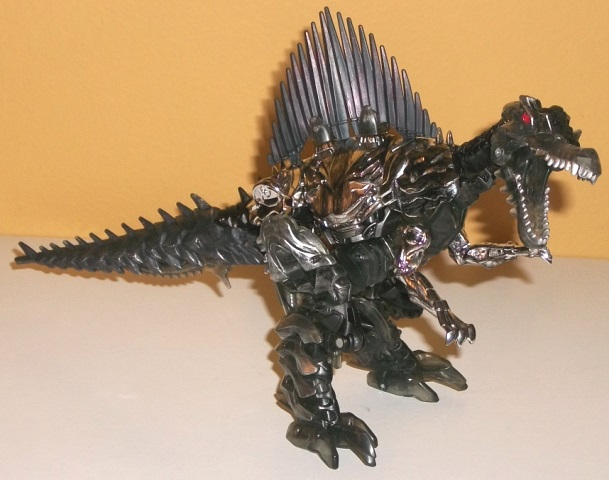
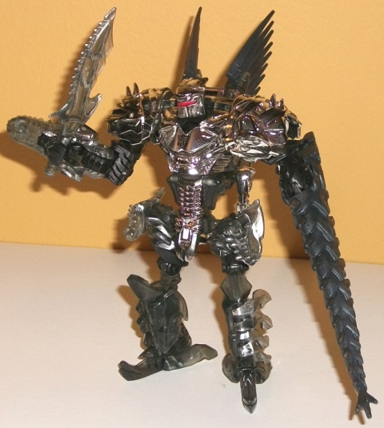
Allegiance
: Autobot
Size
: Deluxe
Difficulty of Transformation
: Medium
Color Scheme
: Chrome silver, clear
tinted plastic, charcoal black, silver, and some red, black, and dull rusty
red
Individual Rating
: 9.6
Scorn's got a bit less
transparent plastic than is typical in the set-- only his dino head, most
of his legs, and a bit of his waist connector parts are this shade, and
all of them are brushed with a really nice amount of silver for that "weathered"
look this set has. His entire main body is chromed up, as well as his dino
arms-- all of it, again, brushed with black this time for more of the "weathered"
look. In fact, with the exception of his black plastic-- which is used
for such parts as his upper dino arms, right hand, knees-- is the only
part of him that isn't covered with some kind of "weathering", which I
assume is because the black plastic is that kind which is unpaintable.
Even his lengthy tail-- which is a more "impure" shade of black because
of it having to be rubbery plastic-- is covered in silver weathering detail,
along with his knife weapon. In a small callback to his mass release toy,
his fins have just a smidge of dull rusty red weathering on them. It's
a bit of a shame, as Scorn had the most "not-silver" parts on him in the
movie, and out of all the toys in this set he has the least color (though
the really nice red on his dino and robot eyes/optics pops very well).
That said, the amount of paint on him is absolutely PHENOMENAL. With such
a large amount of paint I'm honestly surprised he's not some kind of custom,
even at "Platinum Edition" pricing. He looks about as good as a gray-and-black
Transformer possibly can.
No mold changes have
been made to this version of Scorn.
 Slog
Slog
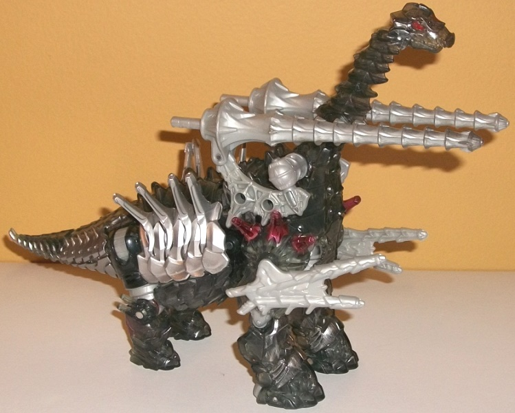
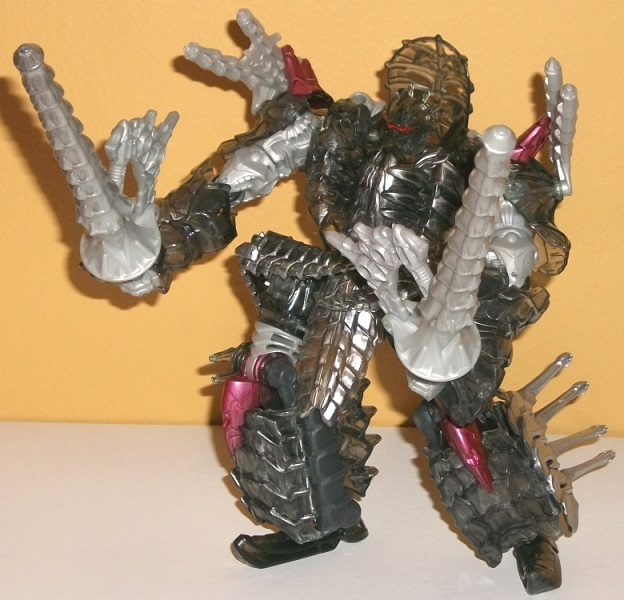
Allegiance
: Autobot
Size
: Voyager
Difficulty of Transformation
: Hard
Color Scheme
: Light milky gray,
clear tinted plastic, silver, and some dark red and pale metallic purplish
red
Individual Rating
: 8.2
Of course, Slog is the
odd 'bot out in this set-- the whole point was more "movie-accurate" color
schemes, and Slog's the only one in this pack that wasn't actually in the
movie. He was likely included in the pack to match the whole "2 voyagers,
3 deluxes" mix in the
"Autobots United"
set so that the two could be at the same simple price point/budget. Anyways,
Slog's mass release was already gray, but this one actually has less color
than the original-- the only non-monochrome paint apps on Slog are the
purplish red spikes on the shoulders and on the robot knees, and the red
eyes/optics. I really wish just a tad more color had been added for a voyager-size
toy. This is particularly the case since all of Slog's plastic is either
the clear tinted plastic used in the other toys in this set (but in a MUCH
greater quantity) or a pretty boring light milky gray plastic, the latter
of which has NO weathering on it anywhere that it's used (the weapons,
robot waist, and small connector pieces like the robot knees and elbows).
It really stands out, given how much this set otherwise does such a great
job at looking "realistic" in terms of battle damage. Everything else on
Slog is clear plastic, and unfortunately relatively little of it is painted,
too-- Slog looks even more ghostly than Grimlock because of this decision.
The only parts of his clear tinted plastic that are painted with that nice
"silver weathering" detail are his lower front beast legs/robot arms, the
robot skirt piece and ends of the dino tail, the front pieces of his lower
robot legs, the dino head, and robot chest. This means his entire dino
neck and back is unpainted with weathering, along with his dino rear legs,
shoulders, and even the robot head. Fortunately, some pieces on his main
body and upper tail are painted solid silver which at least makes his main
body look a bit more solid in beast mode, but overall this toy doesn't
look nearly as "premium" as the other toys in this set, due to both the
lack of chrome and the (relative) lack of weathering paint apps.
No mold changes have
been made to this version of Slog.
 Strafe
Strafe
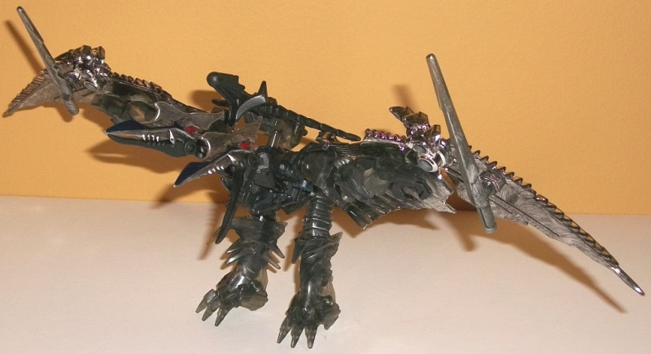
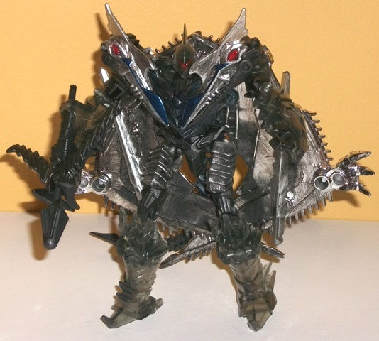
Allegiance
: Autobot
Size
: Deluxe
Difficulty of Transformation
: Easy
Color Scheme
: Chrome silver, clear
tinted plastic, black, and some very dark metallic blue, dark red, and
silver
Individual Rating
: 8.4
The emphasis on Strafe's
paint apps appear to be in his beast mode; for one, his ENTIRE wings are
chrome silver, covered with a good amount of black weathering detail, and
it all looks mighty good. His pterodactyl heads and his lance weapons are
made from clear tinted plastic, but also covered with a pretty good amount
of silver weathering detail, particularly on the heads-- there's also a
nice dark blue stripe down the sides of the pterodactyl heads' beaks, which
is a nice little extra detail. That said, though I like the subtle nod
to his mass-release version with the blue, it's just a bit TOO dark to
really come out unless it's right next to a bright color (like the silver
on the beast heads). For a good example of the downside of this, look no
further than Strafe's tails-- they're cast in black plastic, but they're
covered in the same "weathering" type of detail, though said "weathering"
is that same shade of very dark blue. And the thing is, it's very hard
to make out, even under good light. In robot mode, Strafe has considerably
more black plastic visible-- in fact, pretty much his entire main body
is made of it, along with his upper legs, knees, upper arms, elbows, and
fists. The lower legs and arms are made of the tinted clear plastic, but
there is little "weathering" detail specific to this mode-- just some silver
weathering on the upper legs, really. This makes the limbs and head look
very "ghostlike"-- a cool effect, especially with the red optic against
the transparent head, but a bit of an odd decision given the whole "movie-accuracy"
point of this set. There's also some of the aforementioned very dark blue
on the chest, but since the underlying plastic is black, it doesn't show
up all that well. Strafe's crossbow weapon is also solid black without
any weathering, another missed opportunity (albeit a minor one).
No mold changes have
been made to this version of Strafe.
The "Dinobots Unleashed" set is pretty much a must-get for those who want movie accuracy on their figures above anything else-- which is probably most people who are looking at the more "complex" toy molds in the AoE line. All of them have an absolute TON of paint apps, with a lot of excellent weathering (though not all of it is well-placed), and the usage of many of the same colors make them look like a real team while each still retaining a bit of individualistic color. Plus, at $100 U.S., this set is just barely more expensive than buying all of the mass releases separately. Even if you have some of the mass-release versions of these molds, I feel this set is still worth getting-- they're just stellar paint jobs, even if they're not the most colorful toys on a shelf.
Reviews by Beastbot